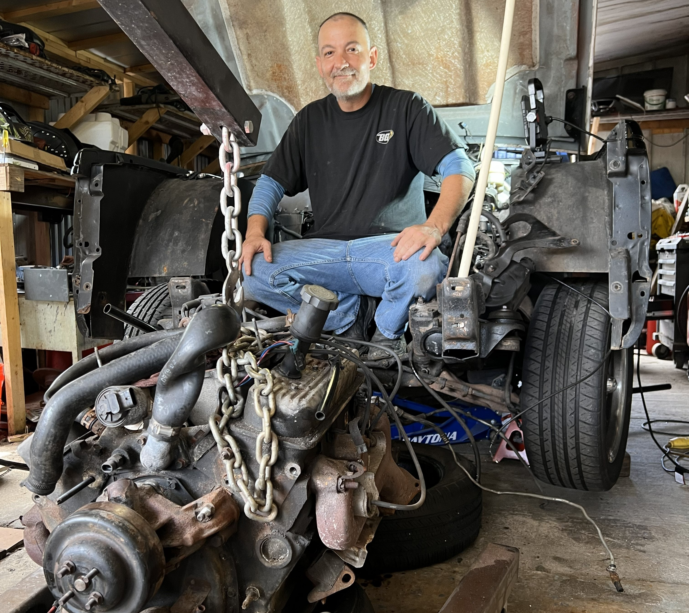

Why Choose Me
Expert
Professional with over 30 years of experience.
Quality Guaranteed
I stand behind every project I complete.
Timely Completion
On-time delivery without cutting corners.
Free Estimates
No-obligation consultations and transparent pricing.
About Me
I'm a skilled mechanic and handyman with a passion for fixing, building, and keeping things running the way they should. Whether it's a lawn mower that won't start, a vehicle that needs repairs, or a project around your home, I take pride in providing dependable, high-quality workmanship.
I work on small engines, cars, trucks, trailers, and a wide variety of household repairs. From routine maintenance and engine diagnostics to welding, repairs, installations, and general handyman services, I bring decades of hands-on experience to every job.
Experience
I attended Bay Path Regional Vocational Technical High School in Charlton, Massachusetts, where I studied small engine repair.
I began working in the automotive industry in 1994 at a small full-service gas station, pumping gas, performing oil changes, and cleaning the service bay. From there, I moved to a high-performance shop, where I worked on classic muscle cars, engine swaps, and complete restorations.
I later became an Assistant Manager at Speedy by Monroe, where I spent three years bending exhaust pipes and performing general automotive repairs.
In 2000, I joined Herb Chambers Toyota in Massachusetts, where I worked for five years before moving to Florida. I then worked at Stadium Toyota for more than eight years, serving as the Lead Technician in the Used Car Department for three of those years.
After that, I joined Lexus of Tampa Bay, where I spent more than six years as a Senior Technician in the Used Car Department. During the last five years of my career, I expanded my skills by learning automotive painting and minor bodywork so I could handle every aspect of vehicle restoration and repair.
I founded Vassar Restoration & Repair LLC two and a half years ago, bringing together more than 30 years of experience to provide high-quality automotive, small engine, restoration, and handyman services.